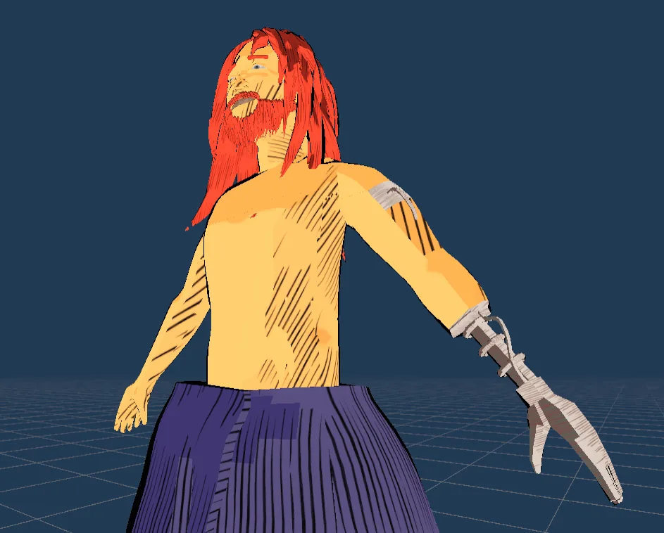
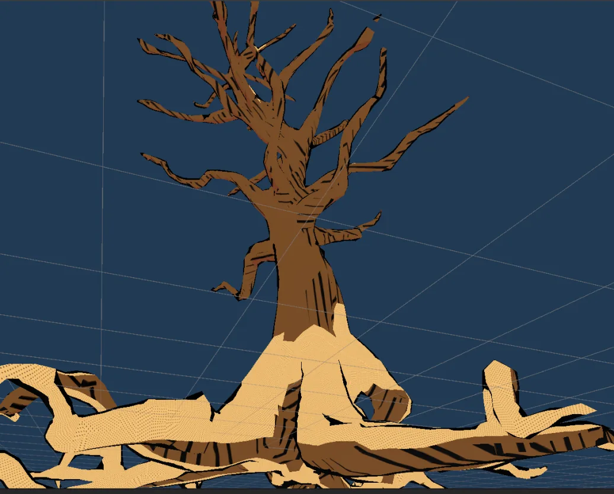
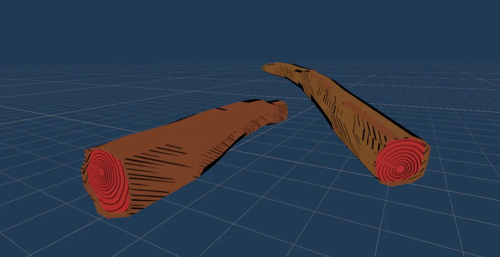

Ahoj fellow vývojáři a fanoušci steampunku a magie!
Tak jo… tohle je asi můj první gamedev post. Jsem z toho nadšený, ale zároveň i trochu nervózní. Hlavně z toho, že mám talent nechávat věci nedokončené. Naštěstí se to týká hlavně gamedevu. Každopádně rovnou k věci. Tohle má být něco jako dokumentace vývoje mé hry. Moje angličtina tehdy nebyla žádná sláva, takže jsem se za ni dopředu omlouval. Na blog jsem chtěl přidávat zhruba jeden post týdně, ale zároveň jsem hodně dělal na webu, vlastní hře i dalších designérských projektech, takže bylo jasné, že to nebude úplně pravidelné.
K samotné hře: aktuálně používám Unity a modely tvořím v Blenderu. Zaměřuju se hlavně na design a 3D. Programování není moje nejsilnější stránka, rozhodně ne na úrovni, abych byl schopný udělat celou hru úplně sám. Takže ano, používám i assety. Dnes mám jen pár screenshotů z úplně rané fáze vývoje. Pokud tě to zajímá, zůstaň naladěný.
Základní modely humanoidní postavy:

TIP: A jo… je tu i něco užitečného
Na vývoj hry používám third-party asset do Unity, který výrazně zvyšuje šanci, že tenhle projekt opravdu dokončím. Budu se snažit využít jeho možnosti, ale zároveň udržet hru co nejvíc originální a doplňovat vlastní mechaniky.
Důvod je jednoduchý: multiplayer a další složitější backendové věci jsou pro mě zatím příliš velké sousto. Tenhle asset má mít navíc podporu pro podobné funkce i do budoucna. Pro mě je to momentálně nejrozumnější cesta. Takže prosím, zkus neřešit použití assetů, pokud jsi sám nikdy neřešil vývoj sólové indie hry.
THE ASSET - RPG BUILDER
Níže přidávám ještě pár dalších obrázků z vývoje. Je na nich vidět vlastní výtvarný styl a práce na shaderech, která je zatím pořád rozpracovaná. O shaderech chci časem udělat samostatný post.

